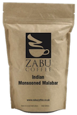

Bean
Me
Up
Me
Up
Special Offer of the Week

Get a LARGE
Americano with a
breakfast toastie for just
6 Euros.
Welcome to
Bean Me Up
Bean Me Up
Bean of the Week: THE MONSOON MALABAR -
THE PERFECT AFTER DINNER DRINK.
One of india's finest coffees, Monsoon Malabar is also one of the best loved of all our blends. Exceptionally smooth with a sweet, spicy kick, this coffee is unique to the lush Malabar Coast of Karnataka and Kerala.

Copyright © 2016 Bean Me Up